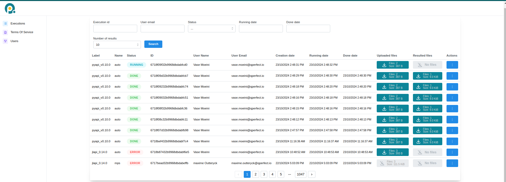

Execution on MIMIQ
This page provides detailed information on how to execute quantum circuits on MIMIQ's remote services. Use the following links to navigate through the sections:
Cloud Service
MIMIQ provides remote execution of quantum circuits via its cloud services, allowing users to run quantum jobs on high-performance infrastructure. You can connect to the cloud server by providing your credentials and accessing the MIMIQ cloud URL at [https://mimiq.qperfect.io/sign-in].
Overview
The MIMIQ Cloud Service offers multiple features for managing job executions, user roles, and organizational access. Below is a screenshot of the Cloud Dashboard that you will find in the server website.

Job Management
The Job Management or Executions section provides a comprehensive view of all quantum jobs submitted. Users can track the status of their jobs, cancel jobs, retrieve results and view detailed information, including start time, completion time, and current status. For Organization Managers, additional features are available:
- View Other Users' Jobs: Organization managers can view jobs submitted by all users in their organization, allowing them to monitor the workload.
- Cancel Jobs: Managers also have the ability to cancel any job within their organization if necessary, providing greater control over resource management.
This section is essential for both tracking the progress of jobs and managing computational resources effectively.
Job status
The Status tab allows you to filter jobs based on their status. By clicking on the tab, you can select a specific status (e.g., NEW), and then click on the Search button to view all jobs that match the selected status.
When a job is submitted to the MIMIQ cloud services, it goes through various status stages:
NEW: When a job is initially submitted, its status is marked as NEW, indicating that it has entered the queue but has not started executing yet. In this stage, the job is waiting for previous jobs in the queue to complete, whether they finish successfully or encounter errors.RUNNING: Once all prior jobs are completed, your job will begin execution, and its status will change to RUNNING. At this point, the job is actively being processed by the MIMIQ engine, either by the statevector simulator or MPS algorithm, depending on the job configuration.DONE: Upon successful completion, the job status changes to DONE, indicating that the quantum circuit has finished executing and the results are available for retrieval.ERROR: If the job encounters an issue during execution, such as exceeding the time limit or encountering hardware or software errors, its status will change to ERROR. Users can then review the error logs to diagnose the problem. You can also hover your mouse over the wordERRORand a short error message will appear.
Job ID
The ID tab shows a unique identifier for each job. This identifier can be used to retrieve results using getresults, see results section.
Terms of Service
When an Organization Manager first connects to the server they need to accept the Terms of Service in order to activate the cloud subscription. The organization users will then be able to send jobs. The Terms of Service is also available for the users to read it.
User Management
The User Management section is available exclusively to users with the Organization Manager role.
Key features of user management include:
- Adding New Users: Organization managers can invite new users to join their organization, enabling them to submit jobs. However, there is a limit to how many users can be added based on the organization’s plan.
- Role Management: Organization managers can assign roles and manage permissions within their team, ensuring that the right users have the necessary access to cloud resources.
Connecting to server for sending jobs
In order to execute a circuit in the remote, you first need to connect to it, see also quickstart page.
Connection methods
The connect function supports three calling conventions:
connect()— opens a browser-based login page (recommended).connect(token)— authenticates with a saved refresh token.connect(email, password)— authenticates directly with credentials.
# Browser login (recommended — avoids storing credentials in scripts)
conn = connect()
# Token-based login
conn = connect("my_refresh_token")
# Credential-based login
conn = connect("john.doe@example.com", "password")Passing your email and password directly stores them as plain text in your script. Prefer browser login or token-based login for better security.
These calls connect to the main MIMIQ server, QPERFECT_CLOUD. Pass url to connect to another instance, e.g. connect(; url=QPERFECT_DEV).
A connection keeps its access credentials fresh in the background. Close it with close(conn) when you are done.
Connection types
connect returns a connection object, which is passed as first argument to submit, getresults and the job management functions below. All connection types are subtypes of AbstractConnection and work the same way with these functions.
MimiqConnection: the MIMIQ cloud service. This is what the calls above return.QhiveConnection: the Quantum Hive services, which authenticate through their own identity provider. Select it by passing the type as first argument toconnect.PlanqkConnection: access through the PlanQK platform, authenticated with a PlanQK consumer key and secret.
# Quantum Hive: browser login, refresh token, or credentials
conn = connect(QhiveConnection)
conn = connect(QhiveConnection, "my_refresh_token")
conn = connect(QhiveConnection, "john.doe@example.com", "password")
# PlanQK: explicit service URL and consumer credentials...
conn = connect(PlanqkConnection, "https://planqk.example/api", "consumer_key", "consumer_secret")
# ...or read from the PLANQK_API, PLANQK_CONSUMER_KEY and PLANQK_CONSUMER_SECRET
# environment variables (a `.env` file in the current directory is also read)
conn = connect(PlanqkConnection)The keyword arguments of the Quantum Hive methods (service URL, identity provider, realm and client) are listed in the docstring of connect.
Tokens
Instead of using your credentials every time you connect to the MIMIQ services, you can authenticate once and save a token. This token can be saved to a JSON file and reused across different sessions, making it a secure and efficient way to manage authentication.
How Token Authentication Works:
- First Authentication: You log in once using your credentials (via browser or directly), and the token is generated.
- Saving the Token: You can save this token in a JSON file using the savetoken method.
- Loading the Token: Later, you can load the saved token with the loadtoken method to reconnect without providing your credentials again.
This is a safer method, as it avoids hardcoding sensitive information like passwords in your scripts.
After authentication, this is how it looks:
# Save the token to a file (example_token.json)
savetoken("example_token.json")
# Load the token from a saved file to reconnect
conn = loadtoken("example_token.json")You can also accomplish all at once (connecting through a token if possible, otherwise connecting via the browser and then saving the token) using this code block:
conn = try
loadtoken()
catch
savetoken()
loadtoken()
end!!! Note Tokens stay valid only for one day.
Execution
MIMIQ supports sending quantum circuits to its remote services for execution either as a single circuit or in batch mode, i.e. multiple circuits at once. In both cases, circuits are initialized in the zero state, and results are obtained by running the circuit and sampling.
You can submit one or multiple circuits for execution using the submit function, which can be called as submit(connection, circuits; kwargs...). This unified interface simplifies quantum job management, whether you're running a single job or a batch of jobs.
The execute and executeqasm functions are deprecated. Use submit instead for all remote circuit executions.
Parameters:
connection: The connection object used to communicate with the MIMIQ remote services.
circuit(s): A single quantum circuit or a list of circuits. These can be provided as MIMIQ
Circuitobjects or paths to valid.pb,.qasmor.stimfiles. See Import and Export and circuits pages.kwargs...: Additional options to customize execution:
- label: A descriptive name for the simulation or batch.
- algorithm: The backend method to perform the simulation:
"auto","statevector", or"mps". The default is"auto", which automatically selects between the statevector or MPS algorithm, depending on the circuit sent. See simulation page for more information. - nsamples: Number of measurement samples to generate (default: 1000, maximum: 65536). See simulation for details on sampling.
- bitstrings: A list of bitstrings to compute amplitudes for. This is equivalent to adding an
Amplitudeoperation at the end of the circuit, see amplitudes section. The results will be stored at the end of the Z-register. - timelimit: Maximum execution time in minutes (default: 30).
- bonddim: Bond dimension for MPS (default: 256). See simulation page.
- entdim: Entangling dimension for MPS (default: 16). See simulation page.
- streaming: Whether to use the streaming simulator (default:
false). - seed: Seed for random number generator.
- reorderqubits_seed: Independent seed for the qubit reordering RNG (default:
nothing, uses main seed). See Simulation Parameters.
A NoiseModel can be passed as third positional argument, submit(connection, circuits, noisemodel; kwargs...). It is applied to every circuit before upload, see Noise Models. This works only for Circuit objects, not for file paths.
Return type: Jobs:
It is important to note that the submit function returns an object of type Execution. This object can then be passed to other functions to get results or status updates (see results and job management sections). However, if for some reason we lose access to this object, or we simply want to connect to the same job in a different session, we can do so like this:
job = Execution("job-id")Here, "job-id" is the unique identifier of the job, which you can find in the dashboard of the web interface, see cloud service section.
Example:
# Prepare circuits
c1 = Circuit()
c2 = Circuit()
# Add gates to the circuits
push!(c1, GateX(), 1)
push!(c2, GateH(), 2)
# Execute Single circuit
job_single = submit(conn, c1; nsamples=1000, label="Single_run")
# Execute circuits in batch mode
job_batch = submit(conn, [c1, c2]; nsamples=1000, label="batch_run", algorithm="statevector")Execution
└── 6ade8dc3552916cac851f4e8Results
After submitting executions, you can retrieve your simulation results in two different ways: through the cloud server, or from your Julia session.
The job results will be deleted from the remote server after some time, so make sure to retrieve them in time. Contact your organization manager to understand how long results will be stored in the server. Note also that results will be deleted after a shorter period of time once the user has downloaded them at least once.
Getting results (Cloud server)
You can download results directly from the cloud server web interface by clicking the box under the Resulted files tab, see cloud server section. This will download a Protobuf file (.pb) and save it locally. The results can then be loaded to your Julia session using the loadproto function.
To learn more about Protobuf and how to save/load results, check out the import & export page, and the saving and loading results section.
Getting results (Julia session)
You can download results from your Julia session using two functions: getresult and getresults.
getresults returns the results of all the circuits sent in a job, in the order they were submitted. getresult returns only the first one, and is convenient when a single circuit was sent. Both wait for the whole job to finish and download all its results.
They are both called in a similar way as getresults(connection, execution; kwargs...).
Parameters:
connection (Connection): The active connection to the MIMIQ services, see connection section.execution (Execution): The execution object representing the job whose results are to be fetched, see execution section. If you saved the output ofsubmitthen you can pass it togetresults(see example below). If you didn't save it, then you can copy the job ID from the Cloud server (see cloud service section) and pass it togetresultsasExecution("job-id").interval (Int): Time interval in seconds between calls to the remote to check for job completion (default: 1 second). A shorter interval results in more frequent checks, while a longer interval reduces the frequency of status checks, saving computational resources.
Both getresults and getresult block further code execution until the job requested has finished. If you want to check the status of the job before attempting to retrieve results, we recommend using isjobdone, see job management section.
If the whole job fails or is canceled, getresults throws an error with the reason given by the server. When a batch completes but some of its circuits failed, the entries of those circuits are QCSError objects holding the error message in their msg field, and the others are QCSResults. Check the type before using an entry:
for (i, r) in enumerate(getresults(conn, job_batch))
if r isa QCSError
println("circuit $i failed: ", r.msg)
else
println("circuit $i: ", length(r.cstates), " samples")
end
endExample:
using MimiqCircuits # hide
str_name = get(ENV, "MIMIQCLOUD", nothing) # hide
new_url = # hide
str_name == "QPERFECT_CLOUD" ? QPERFECT_CLOUD : # hide
str_name == "QPERFECT_DEV" ? QPERFECT_DEV : # hide
isnothing(str_name) ? QPERFECT_CLOUD : # hide
str_name # hide
conn = connect(ENV["MIMIQUSER"], ENV["MIMIQPASS"]; url=new_url) # hide
# Prepare multiple circuits and execute them in batch mode # hide
# Prepare circuits # hide
c1 = Circuit() # hide
c2 = Circuit() # hide
# Add gates to the circuits # hide
push!(c1, GateX(), 1) # hide
push!(c2, GateH(), 2) # hide
# Execute Single circuit # hide
job_single = submit(conn, c1; nsamples=1000, label="Single_run") # hide
# Execute circuits in batch mode # hide
job_batch = submit(conn, [c1, c2]; nsamples=1000, label="batch_run", algorithm="statevector") # hide
# Getting the Results
res_single = getresult(conn, job_single)
res_batch = getresults(conn, job_batch)Format of Results
Each circuit's result is a QCSResults object. Printing it shows a summary: the simulator name and version, the time spent in each stage, the fidelity estimate, the most frequent samples, and the number of executions, amplitudes and samples. Its fields hold the full data:
- simulator, version: the simulator that ran the circuit.
- fidelities, avggateerrors: fidelity and average multi-qubit gate error estimates, one per execution.
- cstates: the classical register of each sample, as
BitStrings. - zstates: the Z-register of each execution.
- amplitudes: the amplitudes requested with the
bitstringskeyword. - timings: the time in seconds spent in each stage, with the whole run under
"total".
The Analyzing Results page describes each field and shows how to compute counts, probabilities and plots from them.
To understand how MIMIQ samples measurements into the classical register, check the simulation page.
Here's an example of how to access different fields:
using MimiqCircuits # hide
str_name = get(ENV, "MIMIQCLOUD", nothing) # hide
new_url = # hide
str_name == "QPERFECT_CLOUD" ? QPERFECT_CLOUD : # hide
str_name == "QPERFECT_DEV" ? QPERFECT_DEV : # hide
isnothing(str_name) ? QPERFECT_CLOUD : # hide
str_name # hide
conn = connect(ENV["MIMIQUSER"], ENV["MIMIQPASS"]; url=new_url) # hide
# Prepare multiple circuits and execute them in batch mode # hide
# Prepare circuits # hide
ghz = Circuit() # hide
# Add gates to the circuits # hide
push!(ghz, GateH(), 1) # hide
push!(ghz, GateCX(), 1, 2:10) # hide
# Execute Single circuit # hide
job_single = submit(conn, ghz; nsamples=1000, label="Single_run") # hide
# Getting the Results # hide
res_single = getresult(conn, job_single) # hide
# Get fidelity
fids = res_single.fidelities
println(fids)
# Get total execution time
tot = res_single.timings["total"]
println(tot)
# Get classical registers of the first 10 samples
first_samples = res_single.cstates[1:10]
println(first_samples)With the output of getresults it works the same way, except you have to access one of the circuit results, i.e. res_batch[index] instead of res_single.
Plotting results
You can visualize the results of your circuit execution using the Plots package. The example below shows how to plot the results from executing a single circuit. See Plotting for the available options.
Example:
using MimiqCircuits # hide
str_name = get(ENV, "MIMIQCLOUD", nothing) # hide
new_url = # hide
str_name == "QPERFECT_CLOUD" ? QPERFECT_CLOUD : # hide
str_name == "QPERFECT_DEV" ? QPERFECT_DEV : # hide
isnothing(str_name) ? QPERFECT_CLOUD : # hide
str_name # hide
conn = connect(ENV["MIMIQUSER"], ENV["MIMIQPASS"]; url=new_url) # hide
# Prepare multiple circuits and execute them in batch mode # hide
# Prepare circuits # hide
c1 = Circuit() # hide
# Add gates to the circuits # hide
push!(c1, GateH(), 1) # hide
push!(c1, GateCX(), 1, 2:10) # hide
# Execute Single circuit # hide
job_single = submit(conn, c1; nsamples=1000, label="Single_run") # hide
# Getting the Results # hide
res_single = getresult(conn, job_single) # hide
using Plots
plot(res_single)Saving and loading results
After retrieval, if you want to save the results locally, you can save them as a Protobuf file (.pb) using the saveproto function. You can load back the results using loadproto. This format ensures minimal file size while maintaining all the necessary data.
To learn more about Protobuf and how to save/load results, check out the import & export page.
Here is an example:
using MimiqCircuits # hide
str_name = get(ENV, "MIMIQCLOUD", nothing) # hide
new_url = # hide
str_name == "QPERFECT_CLOUD" ? QPERFECT_CLOUD : # hide
str_name == "QPERFECT_DEV" ? QPERFECT_DEV : # hide
isnothing(str_name) ? QPERFECT_CLOUD : # hide
str_name # hide
conn = connect(ENV["MIMIQUSER"], ENV["MIMIQPASS"]; url=new_url) # hide
# Prepare multiple circuits and execute them in batch mode # hide
# Prepare circuits # hide
c1 = Circuit() # hide
c2 = Circuit() # hide
# Add gates to the circuits # hide
push!(c1, GateX(), 1) # hide
push!(c2, GateH(), 2) # hide
# Execute Single circuit # hide
job_single = submit(conn, c1; nsamples=1000, label="Single_run") # hide
# Execute circuits in batch mode # hide
job_batch = submit(conn, [c1, c2]; nsamples=1000, label="batch_run", algorithm="statevector") # hide
# Getting the Results # hide
res_single = getresult(conn, job_single) # hide
res_batch = getresults(conn, job_batch) # hide
# Saving Single Result
saveproto("res_single.pb", res_single)
# Saving Batch Result (Should be saved one by one)
saveproto("res_batch_1.pb", res_batch[1])
# Loading Results
loadproto("res_single.pb", QCSResults)
loadproto("res_batch_1.pb", QCSResults)Useful Job Management Features
MIMIQ provides several functions to facilitate job management. For this you need to have a connection established, and possibly a job id or object (see connection and execution sections).
Check job status
You can check the status of jobs using isjobdone, isjobfailed, isjobcanceled, isjobstarted. These functions check whether the job's status is DONE/ERROR/CANCELED, ERROR, CANCELED, or not NEW, respectively, and return a boolean.
You can find this information also in the cloud server, but doing it from within the Julia session allows you to perform different actions depending on job status. It is particularly useful to avoid a call to getresults to take too long because a job has not finished yet (check results section).
To call them, we simply do:
isjobdone(connection, job)
isjobfailed(connection, job)
isjobcanceled(connection, job)
isjobstarted(connection, job)You can also get detailed information about a job using requestinfo:
info = requestinfo(connection, job)This returns a Dict containing full execution details such as status, name, label, creationDate, runningDate, doneDate, errorMessage, and file metadata.
Cancel a job
You can cancel a running or pending job using stopexecution:
stopexecution(connection, job)If the job is NEW, it will be immediately canceled. If it is RUNNING, a stop signal will be sent to the executor.
Delete job files
You can delete the uploaded and result files associated with a job using deletefiles:
deletefiles(connection, job)List all jobs
You can get a list of all job requests sent to MIMIQ's cloud server using requests. This can be useful for monitoring job history and active requests.
This function accepts several options, which you can use to filter by status (i.e. "NEW", "RUNNING", "ERROR", "CANCELED", "DONE") or by userEmail. You can also change the limit for the amount of requests retrieved using limit.
Here's an example to get the last 100 new jobs:
requests(connection; status = "NEW", limit = 100)You can also print the list in a formatted tree structure using printrequests:
printrequests(connection; status = "RUNNING")Download files
You can download the input files or results of a job directly using downloadjobfiles and downloadresults:
# Download input files
downloadjobfiles(connection, job)
downloadjobfiles(connection, job, "my_directory/")
# Download result files
downloadresults(connection, job)
downloadresults(connection, job, "my_directory/")Both return a Vector{String} of downloaded file paths. Files are saved to ./{execution_id}/ by default.
For most use cases, getresults and getinputs are more convenient as they download, parse, and return the results/circuits directly.
Get inputs
You can retrieve the input circuits and parameter files for every job using getinput or getinputs. The former fetches the data of the first circuit in the job, whereas the latter retrieves all inputs from all circuits in the job (useful in batch mode). This is similar to getresult vs getresults.
circuits, parameters = getinputs(connection, job)